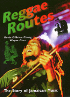

<body bgcolor="#FFFFFF" text="#000000" link="#0000FF" vlink="#CC0000" alink="#CC0000"><center><hr width="350" size="1" align="center" noshade>Reggae's pulsating rhythms and appeals for social justice have galvanized music audiences all over the world<hr width="350" size="1" align="center" noshade><p><a href="https://cdcshoppingcart.uchicago.edu/Cart/ChicagoBook.aspx?ISBN=9781566396295&&PRESS=temple" target="_top">Buy this book!</a> | <a href="https://cdcshoppingcart.uchicago.edu/Cart/Cart.aspx?PRESS=temple" target="_top">View Cart</a> | <a href="https://cdcshoppingcart.uchicago.edu/Cart/Cart.aspx?PRESS=temple" target="_top">Check Out</a></p><p></p></center><!--none//--><h1>Reggae Routes</h1>
<H2>The Story of Jamaican Music</H2>
<h3>Kevin O'Brien Chang and Wayne Chen</h3>
<P>paper 1-56639-629-8 $37.95, Nov 99, <FONT COLOR=#990033>Available</FONT>
<BR> 256 pp
6.75x9.25
<BR>&nbsp;<br>Restricted: For sale in U.S. only (USA).
</P><BLOCKQUOTE><I>"[I]nsightful, informal and well-written...an essential addition to any reggae library and a good selection for anyone interested in the music."</I>
<br>&#151<b><I>The Beat</I></b><I></I></BLOCKQUOTE>
<p>Bob Marley's recordings, some twenty years after his death, still enjoy enormous international popularity. For popular music fans in most of the world, reggae looms so large as to be Jamaica's only music and Marley its consummate musician. In this book, Jamaicans Kevin Chang and Wayne Chen, offer a history of reggae, accounting for its rise and devolution.
<p>Jamaican music can be roughly divided into four eras, each with a distinctive beat-ska, rocksteady, reggae, and dancehall. Ska dates from about 1960 to mid-1966 and rocksteady from 1966 to 1968, while from 1969 to 1983 reggae was the popular beat. The reggae era had two phases, "early reggae" up to 1f and "roots reggae" up to 1983. Since 1983 dancehall has been the prevalent sound.
<p>The authors describe each stage in the development of the music, identifying the most popular songs and artists, highlighting the significant social, political, and economic issues as they affected the musical scene. While they write from a Jamaican perspective, the intended audience is "any person, local or foreign, interested in an intelligent discussion of reggae music and Jamaica."
<p>Featuring some four hundred illustrations that range from album covers and posters to rare photos, <I>Reggae Routes</I> profiles the innumerable artists, producers, and recordings that secured an international audience for Jamaican music.
<p>Artists discussed: Toots and the Maytals, the Wailers, Gaylads, Desmond Dekker, Delroy Wilson, Alton Ellis, Burning Spear, Itals, Wailing Souls, Skatalites, Heptones, and hundreds more.
<BR>&nbsp;<h2>Excerpt</h2><P>Excerpt available at <a href="http://www.temple.edu/tempress">www.temple.edu/tempress</a></p>
<BR>&nbsp;<h2>Reviews</h2>
<P><I>"...Reggae means real music, music that tells a good story, music you can make sense out of. At first reggae sort of mean untidy or scruffy. But then it start to mean like coming from the people. Everyday things. From the ghetto. From the majority. Things people use every day like food, we just put music to and make a dance out of it. Reggae mean regular people who are suffering and don't have what they want."</I>
<br>&#151<b>Toots Hibbard</b>, from the chapter "Do the Reggae"
<p><i>"In an intelligent, accessible and entertaining book, two Jamaican amateurs divide the island's popular music since 1960 into four rough eras&#151ska, rocksteady, reggae, dancehall. ...This history and the subsequent analysis of important songs are punctuated by 400 sharp archival photos, eye-catching graphics and boxed articles on various cultural issues and personalities. The appendices here include not only a bibliography, notes and index by artist, but also lists of the top hits by year and artist rankings that are based on what islanders&#151not foreigners&#151love best. The authors' exploration and celebration of their island's far-reaching culture makes this both a crash course in Jamaican history and a fine guide to developing a 'riddim' record collection."</i>
<br>&#151<b><i>Publishers Weekly</i></b>
<p>Read a <a href="../authors/1443_review.pdf">review</a> from <I>Caribbean Studies Newsletter</I>, Volume 29.1 (Spring 2002), written by Julian M. Smothers (pdf).
<p>Read a <a href="../authors/1443_review2.pdf">review</a> from <I>Yearbook for Traditional Music</I>, Volume 31 (1999), written by Daniel T. Neely (pdf).
<BR>&nbsp;<h2>Contents</h2><P>
<p>Acknowledgments
<br>Preface
<p><b>Part I: The History</b>
<br>1. Introduction
<br>2. The Heartbeat of a People
<br>3. Roots Music: Kumina, Quadrille, Mento, Blues and Jazz
<br>4. Sound System Days and Nights
<br>5. Rhythm and Blues: Rasta and Oh Carolina
<br>6. Ska, Ska, Ska
<br>7. Get Ready for Rocksteady
<br>8. Do the Reggae
<br>9. Reggae International: The Harder They Come and Bob Marley
<br>10. Dub and Roots
<br>11. Inna the Dancehall
<br>12. Dancehall massive
<br>13. The Pioneers: Count Matchukie and King Stitt
<br>14. U-Roy the Originator
<br>15. Riddim Wild
<br>16. Talking Gleaners
<p><b>Part II: The Sounds</b>
<br>17. The Sixties
<br>18. The Seventies
<br>19. The Eighties
<br>20. The Nineties
<p>Appendices
<br>A. Charts
<br>B. Notes and References
<br>C. Bibliography
<br>D. List of Sources
<br>E. A Brief History of Rastafarianism
<br>Index
</P><BR>&nbsp;<H2>About the Author(s)</H2>
<P><B>Kevin O'Brien Chang</B> holds an MBA from the University of Toronto. He lives and operates a business in rural Jamaica. An occasional freelance writer, he has contributed to the Toronto <i>Star</i>, the Jamaica <i>Gleaner</i>, and the Jamaica <i>Observer</i>. His music interest ranges from reggae to the opera.</P>
<P><p><b>Wayne Chen</b> holds a degree in law from the University of the West Indies. He is currently Chief Executive Officer of Jamaica's largest supermarket chain.</P>
<BR><H2>Subject Categories</H2>
<p><A HREF="/tempress/latin.html" TARGET="_top">Latin American/Caribbean Studies</a>
<BR><A HREF="/tempress/sociology.html" TARGET="_top">Sociology</a>
<BR><A HREF="/tempress/music.html" TARGET="_top">Music and Dance</a>
</p>
<p align="center"><a href="https://cdcshoppingcart.uchicago.edu/Cart/ChicagoBook.aspx?ISBN=9781566396295&&PRESS=temple" target="_top">Buy this book!</a> | <a href="https://cdcshoppingcart.uchicago.edu/Cart/Cart.aspx?PRESS=temple" target="_top">View Cart</a> | <a href="https://cdcshoppingcart.uchicago.edu/Cart/Cart.aspx?PRESS=temple" target="_top">Check Out</a></p><p><font face="Arial" size="1"><a href="copyright.html" onMouseOver="window.status='Web Copyright Policy';return true;" onMouseOut="window.status=''" title="Web Copyright Policy">&copy;</a> 2015 <a href="http://www.temple.edu" target="new" onMouseOver="window.status='Link to Temple University home page';return true;" onMouseOut="window.status=''" title="Link to Temple University home page">Temple University</a>. All Rights Reserved. http://www.temple.edu/tempress/titles/1443_reg.html</font></p>